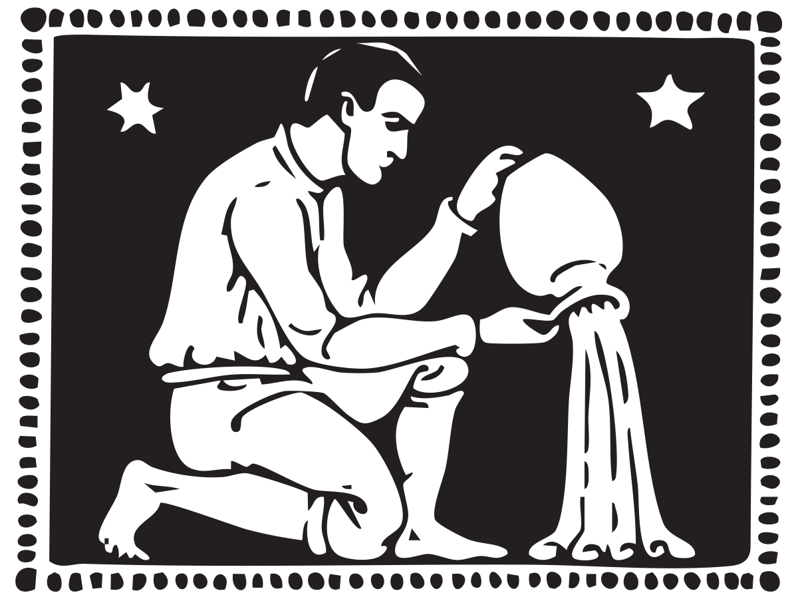

Astro Archive
Astrology has no more useful function than this, to discover the inmost nature of a man and to bring it out into his consciousness, that he may fulfil it according to the law of light
—Aleister Crowley
Signs of the Zodiac

Zodiac Descriptions
Are.na Image Archive
Astro.com